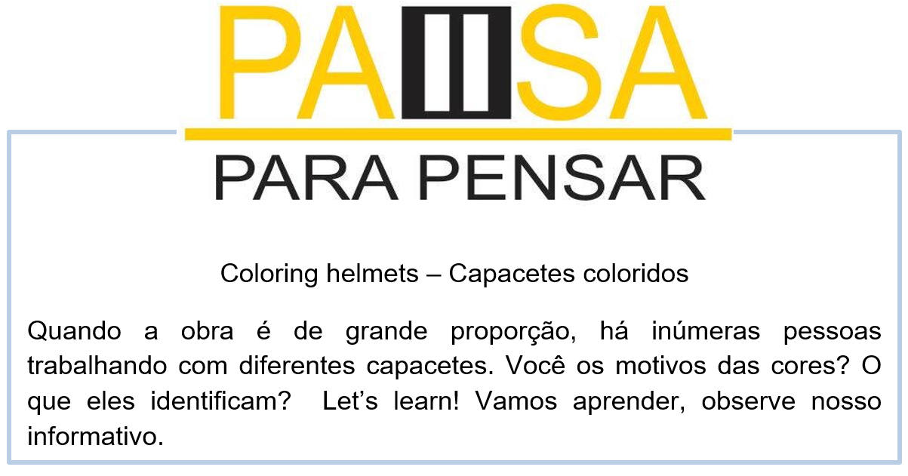
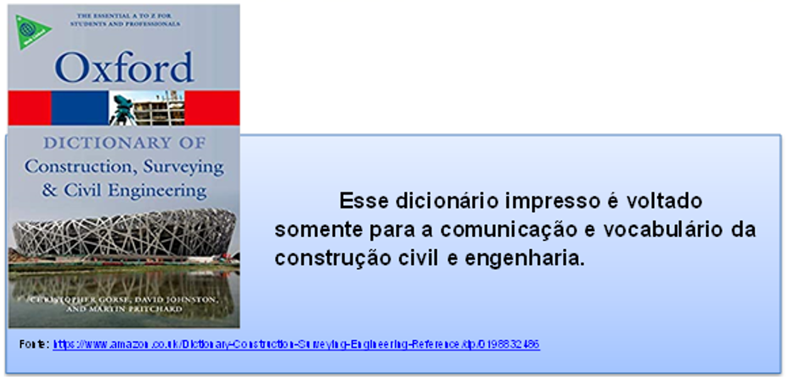

Capítulo 2 - Constructions – Construções
Construction, also called building construction, the techniques and industry involved in the assembly and erection of structures, primarily those used to provide shelter.
Construção civil em inglês – É o nosso tema dessa unidade. Vamos aprender algumas frases e expressões voltadas totalmente para a construção civil em inglês. Esse é um tema muito longo, porém iremos relatar aqui o que é mais importante nesse exato momento.
Vamos ver a tradução do nosso texto introdutório e ver as informações nele contido.
Construção, também chamada de construção civil, as técnicas e a indústria envolvidas na montagem e montagem de estruturas, principalmente aquelas usadas para fornecer abrigo.
Contextualizando - expansão do vocabulário de construção
Construção civil em inglês – Frases curtas
Building trade = Construção civil
Construction = Construção civil
Civil engineering = Engenharia civil
Civil engineer = Engenheiro civil
Floor Finishes = Revestimento do assoalho
Thermal Insulation = Isolamento térmico
Masonry walls = Paredes de alvenaria
Cement blocks = Blocos de cimento
Cement mortar = Argamassa
Thin layer of mortar = Uma camada fina de argamassa
A plastic pipe = Um cano de plástico
Electrical wires = Fios elétricos
Septic tank = Fossa séptica
Underground tanks = Tanques subterrâneos
Architectural drawing = Desenho arquitetônico
Residential buildings = Edifícios residenciais
Bathroom fixture = Acessórios Para banheiros
Bathroom Faucets = Torneiras para banheiros
Corrosion resistant = Resistente a corrosão
Plumbing Systems = Sistema hidráulico / Sistema de encanamento
Waterproof floor tiles = Pisos impermeáveis
waterproof ceiling tiles = Telha impermeável
High Strength Concrete = Concreto de alta resistência
Plaster ceiling = Teto de gesso
Grouting tile = Rejunte
Grouting the floor = Rejuntar o piso
Tinted Glass = Vidro fumê
Toughened Glass = Vidro Temperado
Laminated Glass = Vidro laminado
Glass *wool = Lã de vidro

Materiais e objetos usados em construções
Architecture = Arquitetura
Architect = Arquiteto
Plant = Planta
Painting = Pintura
Sand = Areia
Plastic = Plástico
Whitewash = Cal
Concrete = Concreto
Ceramic = Cerâmina
Granite = Granito
Galvanised = Galvanizado
Polishing = Polimento
Moisture = Humidade
Steel = Aço
Styrofoam = Isopor
Aluminium = Alumínio
Wood = Madeira
Shower = Chuveiro
wires = Fios
Texture = Textura
Plaster of Paris / Plaster = Gesso
pipes = Canos
Mortar = Argamassa
Plaster = Reboco
Masonry = Alvenaria
Wall = Parede / Muro
Window = Janela
Slab = Laje / Placa
Door = Porta
Cement = Cimento
Tiles = Azulejo
Marble = Mármore
Bathroom = Banheiro
Sidewalk = Calçada
Measuring tape = Fita métrica / Trena
Beam / Girder = Viga
Concrete beam = Viga de concreto
Mason = Pedreiro
Column / Pillar = Coluna / Pilar
Structure = Estrutura
Demolish = Demolir
Brick = Tijolos
Roof = Telhado / Teto
Trowel = Colher de pedreiro
Plumb line = Prumo
Expressões de uso em construções
You can actually spray concrete onto a surface to form a thick, uneven coating = Você pode efetivamente esparramar sobre uma superfície de concreto de modo a formar um revestimento espesso e irregular.
The drainage system needs careful construction = O sistema de drenagem necessita de uma construção cuidadosa.
He has a basic construction of brick under a tiled roof = Ele tem uma construção básica de tijolo debaixo de uma cobertura de telhas.
He’s a construction worker = Ele é um trabalhador da construção civil.
How is the construction going? = Como vai a construção?
The house is now under construction = A casa está agora em construção.
The construction blocked the entrance to the street = A construção bloqueou a entrada da rua.
The rightmost lane is now under construction = A faixa mais a direita agora está em construção.
Our new school building is under construction = Nosso novo prédio da escola está em construção.
A crane raises heavy construction materials = Um guindaste levanta materiais de construção pesados.
A lot of construction is going on these days = Um monte de construção está surgindo esses dias.

Para saber mais - A ilha de Manhattan
Manhattan é um dos grandes exemplos de design perfeito. A ilha conecta os distritos de Staten Island, Queens, The Bronx e Nova Jersey. Tudo isso é possível graças a quatro túneis e dezenove pontes.
Parts of the house – Partes de uma casa

Reconstruindo conhecimentos – Verbos modais: should, could, must
Os verbos modais em inglês são uma classe pequena de verbos que são usados como auxiliares de um outro verbo principal em uma frase.
Os principais verbos modais em inglês são "can", "could", "must", "may", "might", "should", "shall", "will" e "would". Vamos estudar os principais.
Should
O verbo modal "should" geralmente é usado para dar um conselho, algo que seria como o "deveria" em português. É como uma versão mais suave do "must".
• You should go there. (Você deveria ir lá.)
• I should leave you alone. (Eu deveria te deixar sozinho.)
Ele também pode ser usado para perguntar a opinião de alguém ou dar sugestões:
• Should we look for a place to eat? (Vamos procurar um lugar pra comer?)
Could
O verbo modal "could" tem dois significados diferentes. O primeiro seria o condicional do "can", algo que seria como o "poderia" em português.
Ele é muitas vezes usado em perguntas como uma versão mais formal e polida do "can". Exemplos:
• Could you help me? (Você poderia me ajudar?)
• I could do the dishes for you if you gave me some money. (Eu poderia lavar a louça para você se você me desse algum dinheiro.)
Must
O verbo modal "must" geralmente significa "dever" ou "ter que" fazer algo, nesse sentido de obrigação. Ele também pode indicar "dever" no sentido de uma suposição. Exemplos:
• I must go home soon. (Eu tenho que ir pra casa logo.)
• He must be very rich. (Ele deve ser muito rico.)
Aplicando ao nosso conteúdo
We could construction a new house. > Nós poderíamos construir uma nova casa.
This wall is terrible, you should do new paint. > Essa parede está terrível, você deveria fazer nova pintura.
You must build a new wall, this will fall. > Você deve construir um novo muro essa vai cair.
O que aprendi
• Nesta unidade aprendemos o vocabulário de construção civil;
• Aprendemos sobre materiais usados em obras;
• Vimos a história da construção de Ilha de Manhattan;
• Aprendemos expressões e frases curtas usadas na construção;
• Na gramática, aplicamos os verbos modais: must, should, could.
Praticando
Imagine que você deverá analisar uma obra e fazer as seguintes observações:
a. Tipo de construção
b. Quais materiais serão usados na construção?
Elabore esse estudo. Escreva em inglês os itens solicitados acima. Inspire-se na imagem abaixo.
Usando os verbos modais: must, should e could escreva frases baseadas nas imagens.